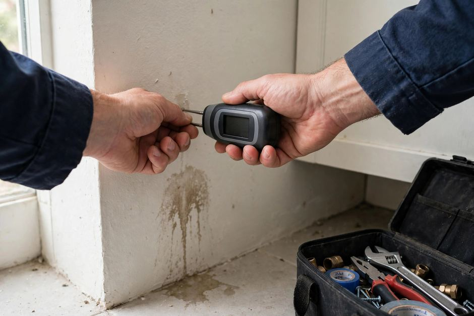
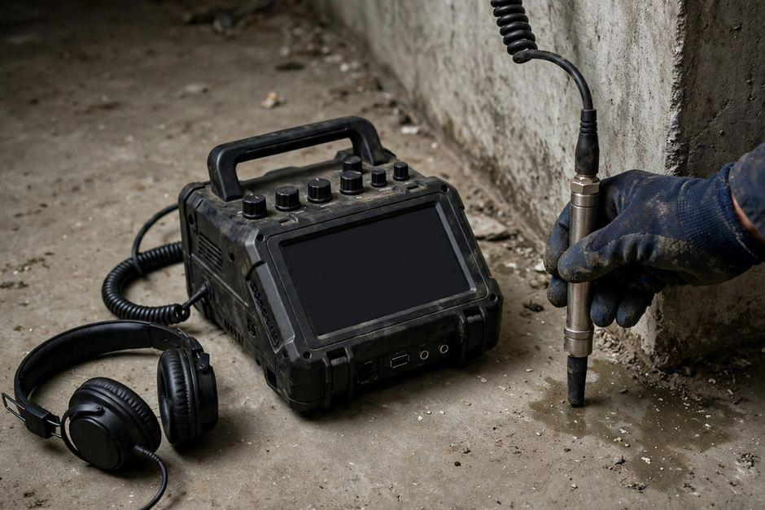

Plumbing repairs in Belleville, Illinois
Leak Repair in Belleville, IL for Supply, Drain, and Fixture Leaks
Leaks in Belleville homes range from a dripping connection under a sink to damp patches that appear with no visible source. Older pipework calls for careful review, since materials and joints vary by era and by earlier alterations. Hinkle Plumbing Company reviews the signs, narrows the source, and discusses repair scope before work begins.
1610 W Main St, Belleville, IL 62220(618) 677-6556Monday through Friday, 8:00 AM to 4:30 PM. Closed Saturday and Sunday.
What this service covers
Leak repair work covered in Belleville homes
Leak repair covers the fix after the source is understood, from a single joint to a run of pipework that needs section work. Diagnosis and repair are separate steps, and the extent of opening up walls or floors depends on where the leak sits. For the diagnostic step, see leak detection in Belleville, IL and how tracing narrows the search before repair.
Supply pipe leaks
Supply lines carry water to fixtures, so a split joint or corroded section can release water into walls, floors, or cabinets. The review checks the line, joints, and shut-off valves to define the section that needs repair.
Drain and waste leaks
Drain leaks show as damp patches, odors, or stains below sinks, tubs, and showers after use. Cast-iron drains in older homes are checked for joint wear and corrosion, with the section identified before repair work is arranged.
Fixture and appliance connections
Leaks at sinks, toilets, faucets, and appliance connections trace to seals, supply lines, or drain joints that have worn. The review separates a seal or connector fault from pipework damage, so repair addresses the connection rather than other pipework.
Leaks behind walls and floors
Concealed leaks hide behind walls, under floors, or above ceilings, where stains and damp patches may appear away from the source. Access is planned around the traced location, and surface restoration needs are discussed as part of repair scope.
Basement and crawl space pipework
Pipework in basements and crawl spaces is reviewed for leaks at joints, low points, and sections exposed to soil moisture and movement. Findings are checked against the layout of supply and drain lines before a section is defined.
Source tracing before repair
Repair starts with tracing, using visual review, isolation of sections, and meter review to narrow where water is escaping. Tracing limits opening up to the area that needs work and keeps repair scope tied to evidence from the review.
About Hinkle Plumbing Company
A Belleville plumbing company for leak repair work
Hinkle Plumbing Company works from Belleville, IL on leak repair for homes where visible signs and hidden damp patches need tracing before repair. The approach is diagnostic first, with repair scope discussed after the source and affected pipework are understood.
Hinkle Plumbing Company is based at 1610 W Main St, Belleville, IL 62220, and serves homes in Belleville, IL with leak repair that separates diagnosis from the fix. The Google rating is 5.0 from 3 reviews. Monday through Friday, 8:00 AM to 4:30 PM. Closed Saturday and Sunday. Older Belleville homes may expect to check for galvanized supply lines and cast-iron drains, while newer homes may expect copper or PEX supply lines and PVC drains, with each layout checked on site.

How we workA plumber reviewing pipework and joints in a residential setting in Belleville, Illinois.
How leak repair proceeds
A measured sequence from call to testing
The steps flex with the condition of the job, but the sequence stays the same.
Initial discussion of signs and scope
The call reviews what has been seen, including stains, damp patches, odors, and changes in water use, without assuming a cause. Location, timing patterns, and affected fixtures are noted to shape the on-site review.
On-site review of pipework and fixtures
Pipework, joints, fixtures, and connections are reviewed in the area, with attention to access and to signs away from the source. Older materials are checked where era-typical, and the layout of supply and drain lines is mapped.
Tracing the source before opening up
Isolation checks, meter review, and visual tracing narrow the source so opening up stays limited to the section that needs work. Where the source remains unclear, further diagnostic review is discussed before repair scope is set.
Repair of the affected section
Repair addresses the traced section, whether a joint, connector, seal, or run of pipework needs attention. Materials are matched to the existing layout where suitable, and connections are checked as the section is restored.
Testing and review after repair
After repair, the section is tested for leaks at joints and connections, and nearby fixtures are checked for normal operation. Findings from testing shape any follow-up discussion about related pipework that showed wear during the review.
Repair methods
Methods matched to pipe material and leak location
Method choice depends on material, location, and whether damage is limited to a joint or extends along a run. A single section repair differs from broader pipework renewal, and the review distinguishes limited work from renewal before work is arranged. Where renewal is discussed, see repiping in Belleville, IL for the broader scope.
Section replacement for damaged pipework
A damaged section is cut out and replaced with pipework matched to the existing material and layout. Joints at each end are checked, and the new section is tested with nearby connections before surfaces are restored.
Joint renewal at connections
Joints fail through wear, movement, and corrosion at threaded, soldered, or compression connections. Renewal involves cleaning, reseating, or replacing the joint assembly, with the connection checked for leaks after reassembly.
Seal renewal at fixtures
Seals at sinks, toilets, and faucets wear with use and allow water past joints that otherwise remain sound. Seal renewal replaces the worn seal or gasket and checks the fixture connection for leaks during use.
Drain joint repair
Drain joints are checked for gaps, wear, and corrosion that allow water to escape during drainage. Repair reseats or replaces the joint and checks flow through the drain, with attention to traps and nearby connections.
Corrosion-affected sections
In older homes, galvanized supply lines are checked for internal corrosion and reduced flow at joints and bends, as era-typical review. Where corrosion is found, the section is discussed for replacement rather than patching of the same run.
Post-repair testing
Testing after repair checks joints, seals, and connections under normal use, with fixtures run to confirm drainage and supply behavior. Any seepage found during testing is addressed before the work area is closed and surfaces are restored.
Checks before handoff
The work is checked before the visit ends, and what was done is reviewed with you.
Common patterns
Patterns seen in Belleville leak repair calls
The patterns below describe common calls in general terms, without job details, to show how signs, tracing, and repair scope fit together. Each pattern starts with an observation at home and moves through review toward a defined repair section.

Damp patch below a bathroom
A common call describes a damp patch on a ceiling below a bathroom, with staining that grows after the shower or tub is used. The review checks the bathroom floor, drain joints, and supply connections above, since water can travel along joists before showing below. Tracing narrows the source to a drain joint or supply connection, and opening up is limited to the section that needs work. Repair addresses the traced joint or section, with testing of nearby fixtures before surfaces are restored.
Damp cabinet and musty odor in a kitchen
A common call describes dampness inside a kitchen cabinet and a musty odor near the sink, with no visible drip during brief use. The review checks supply lines, drain joints, traps, and appliance connections under the sink, since slow seepage can collect out of sight. Isolation and meter review help narrow whether the source sits in supply pipework or in drainage, and the affected connection is identified. Repair renews the seal, joint, or section involved, with fixtures tested and the cabinet area checked before the work is complete.
Signs to review
Signs that may point to a leak
Most calls fall into a few patterns. Knowing which pattern applies decides what the visit involves.
Water stains on ceilings or walls
Stains that darken or spread after fixture use can point to a supply or drain leak above or behind the stained surface. The review checks the area above and nearby connections, since water can travel before showing as a stain.
Musty odor without a visible drip
A musty odor in a cabinet, closet, or room corner can accompany slow seepage that stays hidden behind surfaces. The review checks nearby pipework, joints, and traps, with tracing used to narrow the source before opening up.
Unexplained change in water use
A change in meter readings or water use with no change in household routine can point to a hidden supply leak. Meter review with fixtures shut off helps show whether water is moving when no fixture is in use.
Warping, peeling, or soft flooring
Warped flooring, peeling paint, or soft patches near plumbing can follow repeated dampness from a nearby leak. The review checks the floor, wall base, and nearby joints to separate a plumbing source from other moisture sources.
Cost factors
What shapes the scope of leak repair
Cost follows access, pipe material, and the extent of the affected section.
Accessible joint or connection
Where the leak sits at an accessible joint or fixture connection, scope centers on the joint, seal, or connector involved. Access, material, and testing needs shape the work, and surface opening is limited.
Concealed pipework behind surfaces
Where the leak hides behind a wall or floor, tracing, access, and surface restoration add scope beyond the pipework fix itself. The extent of opening up and the finish of affected surfaces are discussed as part of scope.
Corroded or widespread pipework
Where corrosion or wear extends along a run, scope may move from a single section repair to broader renewal of the affected pipework. Material, length of run, and access points are reviewed, with options discussed before work begins.
Reviews from Google
What Customers Say on Google
★★★★★
“Very prompt and responsive, the worker was friendly and informative! Will use this company again!”
★★★★★
“Don did an outstanding job for me when I needed him and highly recommend his business”
★★★★★
“Rated 5.0 out of 5 across 3 Google reviews, all five stars.”
How is a hidden leak located before repair?
Hidden leaks are narrowed through visual review, isolation of sections, and meter review that shows whether water moves when fixtures are shut off. The review checks signs in context, including stains, damp patches, and odors, rather than assuming the stain marks the source. Where tracing remains unclear, further diagnostic review is discussed before opening up or setting repair scope.
What should I do when I find a damp patch?
Note the location, nearby fixtures, and whether dampness changes after fixture use, since that pattern helps tracing. Shut-off valves near the fixture or at the main supply can limit further water release while review is arranged. Call to discuss the signs and the layout, so the on-site review can focus on the traced area.
Does leak repair always require opening a wall or floor?
Opening up depends on where the leak sits and whether tracing can narrow the source to an accessible joint or connection. Some leaks are reached through existing access points or fixture openings, while concealed leaks need limited opening around the traced section. Access and surface restoration needs are discussed as part of repair scope before work begins.
What affects the cost of leak repair?
Cost is shaped by access, pipe material, the extent of the affected section, and surface restoration needs after repair. Concealed leaks, corroded runs, and difficult access add scope compared with an accessible joint repair. Call (618) 677-6556 to discuss the signs and layout, so scope factors for the job can be reviewed without figures assumed in advance.
Related services
Related Services

Leak Detection in Belleville, IL
Diagnostic review that narrows hidden and visible leaks to a source before repair scope is set.
Plumbing Repairs in Belleville, IL
General plumbing repair work for fixtures, pipework, and connections in Belleville homes.
Repiping in Belleville, IL
Broader pipework renewal where corrosion or wear extends beyond a single repair section.Mon–Fri 8:00 AM–4:30 PM
Discuss leak repair in Belleville, IL
Call Hinkle Plumbing Company at (618) 677-6556 to discuss leak repair in Belleville, IL, including signs, tracing, and repair scope. Monday through Friday, 8:00 AM to 4:30 PM. Closed Saturday and Sunday.

Talk with the local team
Request Leak Repair
Call (618) 677-6556 during office hours, Monday through Friday, 8:00 AM to 4:30 PM. Tell us what is happening and we will talk through the next step.